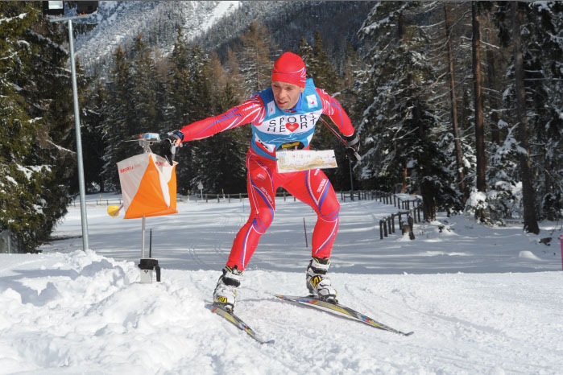

About Sport Orienteering
Sport orienteering is a comprehensive, individual kind of sport in which an athlete using a map, compass and his skills, should find checkpoints installed in the forest and mark them in a certain order at the shortest time.
Sport orienteering is one of the most popular sports. This is a wonderful form of active rest, one of the most pleasant, interesting and health-improving types of exercise. People of all ages are allowed to engage in this sport, with various physical training and sports qualifications.
There are many types of orienteering:
Orienteering with the given direction is one of the most common types of sport orienteering. In this type of competitions, athletes should find all checkpoints in the defined order.
Skiing Sport Orienteering is a type in which athletes usually have a marked track. However, it is one of the harder types of Sport Orienteering because it is mush harder skiing thru the forest.
Nighttime Orienteering is one of the most common types of sport orienteering. In this type of competitions, athletes should find all checkpoints in the defined order. This is one of the most dengerous types of Sport Orienteering, but at the same time the most fascinating.
Fill Your first and last name to get more information!